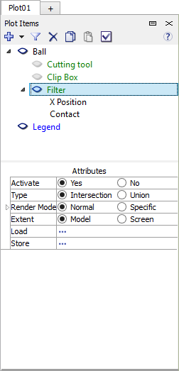
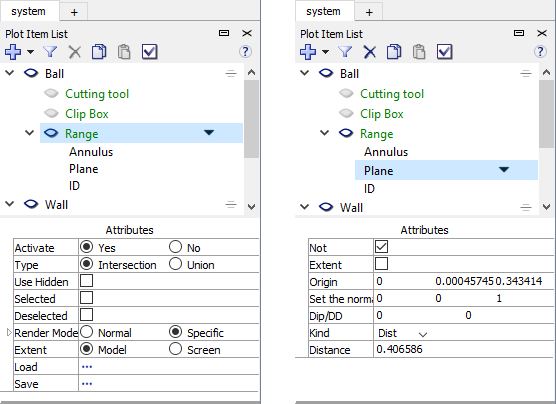

绘图项范围
范围的构建涉及多个步骤。需要注意的是，范围及范围的构建在若干方面与绘图相似。绘图可视为绘图项的容器，绘图构建涉及向绘图中添加一个或多个项。类似地，范围是范围元素的容器；范围的构建涉及向范围中添加一个或多个元素。其做法是：为给定绘图项选中“范围”项，按  ，然后从随后出现的对话框中添加范围元素（见“构建范围”对话框（The Build Range Dialog））。
，然后从随后出现的对话框中添加范围元素（见“构建范围”对话框（The Build Range Dialog））。
应用于绘图项的范围将显示该绘图项位于范围定义之内的部分，同时将位于范围之外的部分从视图中移除。一个范围由一个或多个范围元素组成。这些元素在很大程度上（但不完全）与可配合 范围（range） 关键字使用的关键字相同——两者之间的重叠应能带来一种熟悉感。

添加范围元素到范围中，方法是使用工具栏上的  调用i 构建范围（Build Range）对话框。
调用i 构建范围（Build Range）对话框。
显示范围元素（如有可能，使其在绘图中可见）：在“绘图项列表”中选中它即可。当在“绘图项列表”中选中其他对象时，它会从视图中移除。有些范围元素没有可视化组件，只能通过绘图项控制集的“属性”部分进行编辑。
激活范围（开启其过滤作用），或通过切换其  按钮来取消激活。
按钮来取消激活。
注意
显示与激活彼此独立。
范围可以复制/粘贴（copied/pasted）到另一个绘图项上。此操作可以跨绘图执行。
编辑绘图项的范围：在控制集的上部选中该范围或其某个范围元素。控制集下部的属性部分（见上方图片）将显示其属性。这些属性可在控制集的属性部分调整；或者，若选中的是某个范围元素且该元素具有可视化组件，也可通过在绘图内操作该范围元素进行交互式调整。
若要在不显示对绘图项影响的情况下操作范围，请将其取消激活（切换 ），但保持“范围”项在控制集上部被选中。
范围属性
激活：这相当于使用可见性切换按钮（ ）。选择“是”将使范围对绘图项起作用；选择“否”则绘图项不受影响。无论哪种情况，只要选中了该范围的某个范围元素，且该元素为交互式元素，它就会显示在绘图中。这意味着当选择“否”时，可以操作范围元素或更改其属性，但这些效果不会显示在绘图项上。
类型：范围必须是其各范围元素的“交集”或其各范围元素的“并集”。
渲染模式：选择“普通”，可在范围激活时正常渲染绘图项。在此状态下，绘图项按其属性渲染。选择“特定”将以特定于范围的方式渲染绘图项。在此状态下，可使用各种渲染属性来修改绘图项的外观。两者之间一个实际差异是：在定义范围期间，当设置为“特定”模式时，范围之外的对象（因而将被范围移除）会以透明方式渲染；当设置为“普通”时，随着范围的逐步定义，它们会立即被移除。
范围：确定添加范围元素时，其默认范围是从当前“模型”尺寸计算，还是根据“屏幕”上当前视图的尺寸计算。
加载：调用一个对话框，允许用户加载已存储的项目过滤器作为当前范围。所加载的项目过滤器将替换当前范围定义。
保存：调用一个对话框，允许用户将当前范围定义保存为项目过滤器。保存后，它既可作为范围元素使用（通过已保存的绘图过滤器（Saved Plot Filters）元素），也可“加载”（如上所述）以使其成为活动的范围定义。
绘图项控制集中的范围


图 1：范围（左）及其范围元素（右）的属性列在“绘图项列表”下方的“属性”部分中。
与绘图项类似，当在i 绘图项（Plot Items）控制集的上部选中给定范围或其某个范围元素时，其可编辑属性会显示在并在该控制集下部的“属性”部分中访问。
范围可以复制/粘贴（copied/pasted）到另一个绘图项上。此操作可以跨绘图执行。
与绘图允许将同一项多次添加到绘图中类似，范围也接受同一范围元素的多个实例（不过每添加一个实例都需要重新打开“构建范围”对话框）。
范围子项无法从绘图项中删除。要清除绘图项上的范围，请从“绘图项”列表中选中其范围元素，然后按工具栏上的 按钮将其删除。
常用范围元素
各范围元素的具体操作和属性在范围元素索引（Range Element Index）中介绍。
| 这些内容对您有帮助吗？… 版权与免责声明 |
FLAC3D © 2019, Itasca | 原文更新于 2020 年 10 月 8 日 |